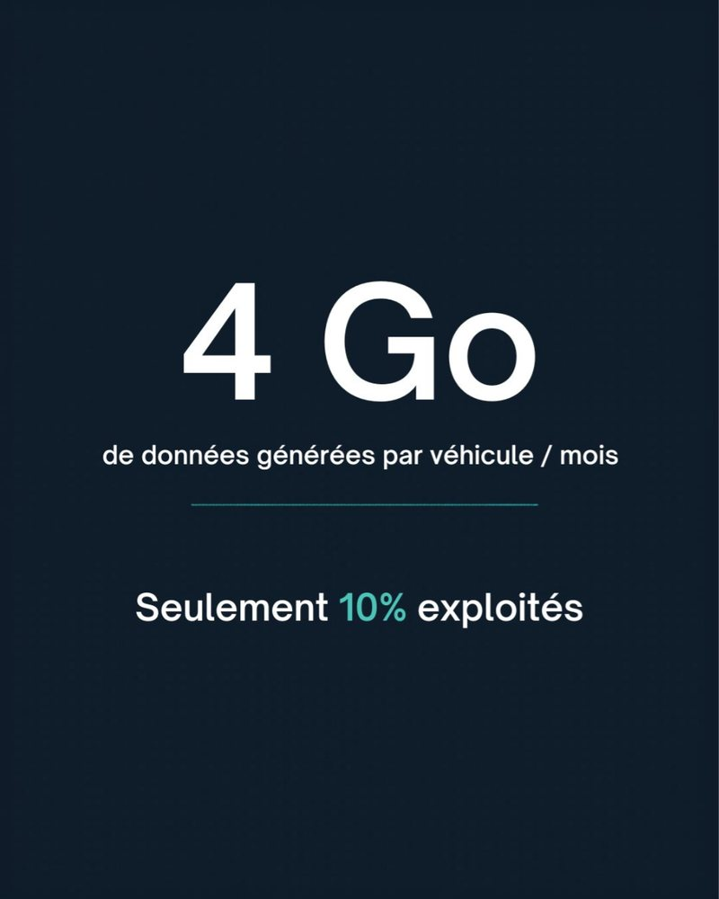

Les flottes françaises génèrent en moyenne environ 4 Go de données par véhicule et par mois : géolocalisation, comportement de conduite, consommation de carburant, alertes de maintenance, suivi des températures. La plupart des entreprises n'en exploitent qu'environ 10 %.

Ce n'est pas parce que les outils manquent, ni parce que les données sont mauvaises. C'est parce que la question « qu'allons-nous faire de ces données ? » n'a pas été posée avant d'acheter la solution.
Même les flottes bien équipées sont concernées
On pourrait croire que le sujet ne touche que les flottes peu matures. C'est l'inverse : même sur des flottes très bien équipées, le vrai défi n'est jamais technologique. Il tient à la gouvernance de la donnée et à la capacité à la transformer en décisions opérationnelles concrètes.
Pourquoi la donnée reste dans le boîtier
- La technologie a été achetée avant les cas d'usage. On a choisi un boîtier et une plateforme, puis on a cherché à quoi ils pourraient servir.
- Personne n'est responsable de la donnée. Le gestionnaire de flotte consulte le portail, mais personne n'a le mandat de la transformer en décisions pour l'exploitation, la maintenance ou la finance.
- Les systèmes ne se parlent pas. La télématique vit dans le portail de l'éditeur, coupée du TMS, de l'ERP et de la GMAO.
- Les indicateurs ne remontent pas. Les chiffres restent dans le service flotte, sans être partagés avec la direction.
Partir des décisions, pas des données
La bonne méthode inverse le raisonnement. Plutôt que de se demander ce que l'on peut faire avec les données disponibles, on liste les décisions qui reviennent chaque mois, puis on cherche la donnée qui permet de mieux les prendre :
- Quels véhicules affecter, garder, remplacer ou supprimer ?
- Quand intervenir en maintenance, et sur quels véhicules en priorité ?
- Quels conducteurs accompagner pour réduire la sinistralité ?
- Quels véhicules peuvent passer à l'électrique sans perte d'exploitation ?
- Payons-nous ce que nous utilisons réellement, en carburant comme en abonnements ?
Chaque décision appelle quelques indicateurs, pas des centaines. C'est ce petit nombre d'indicateurs, suivis dans la durée, qui crée la valeur.
La gouvernance, vrai sujet de la data flotte
Exploiter sa donnée de flotte suppose de répondre à quatre questions simples : qui en est propriétaire, qui la fiabilise, qui la regarde chaque mois, et où est-elle stockée ? La dernière question compte plus qu'il n'y paraît : des historiques conservés chez soi permettent de changer de fournisseur sans perdre des années de mesures.
Trois questions pour faire le point
- Quelle part de vos données de flotte entre réellement dans une décision chaque mois ?
- Qui est responsable de la qualité et de l'usage de ces données ?
- Pourriez-vous exporter vos historiques demain si vous changiez de fournisseur ?
Et vous, quelle part de vos données de flotte exploitez-vous réellement ?